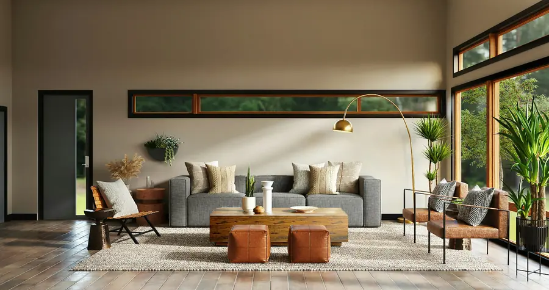
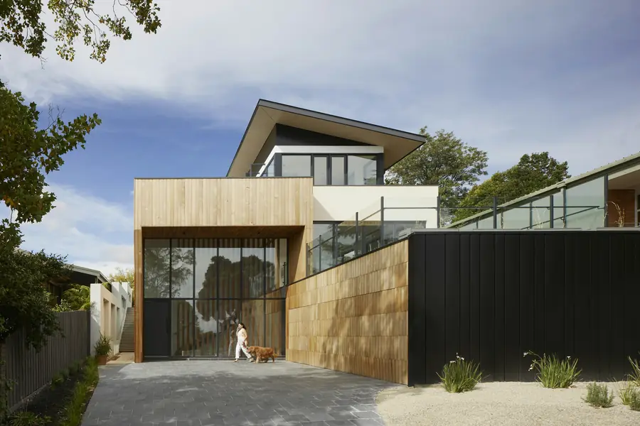

Quality
Rectified edges, consistent shading and dependable strength, checked before anything leaves the warehouse.
About Hari Traders
We bring together premium porcelain tiles in marble, stone, concrete, oak and terrazzo, selected for the way they look in a real room and the way they hold up for years.

01 Our story
A tile is the one surface in a home you touch every single day. It takes the weight of furniture, the heat of a kitchen, the water of a bathroom, the footsteps of a family. We started Hari Traders with a simple belief: it should look beautiful and still be working beautifully years from now.
So we choose carefully. We look at how a marble-look surface carries its veining, how an oak-look plank reads in morning light, how a concrete slab behaves across a large room. We favour calm palettes and honest textures, surfaces that let the architecture and the people in the room take the lead.
Whether you are finishing a single bathroom or specifying a full commercial project, our job is the same: help you find the right surface, in the right size and finish, and make sure it arrives the way you imagined it.
02 What we stand for
Rectified edges, consistent shading and dependable strength, checked before anything leaves the warehouse.
Contemporary collections shaped by architecture: calm palettes, honest textures, considered formats.
Clear specifications, realistic expectations and no pressure, we would rather you chose right than chose fast.
Guidance on selection, quantity and layout from the first question to the final box delivered.
03 How it works
Browse the catalogue, filter by colour, finish, size and room, and shortlist what speaks to you.
Send us your shortlist, a plan or a few photos, and tell us where the tile is going.
We confirm availability, advise on quantity and finish, and share a clear quote.
Your order is checked, packed and dispatched, ready for your installer.
